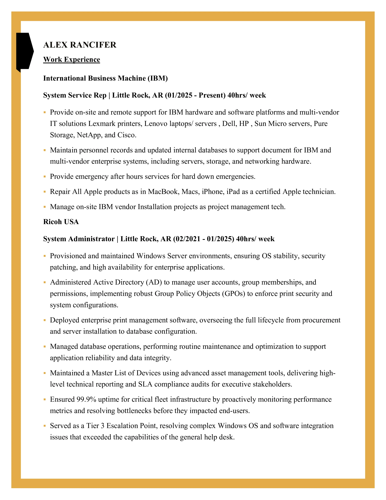
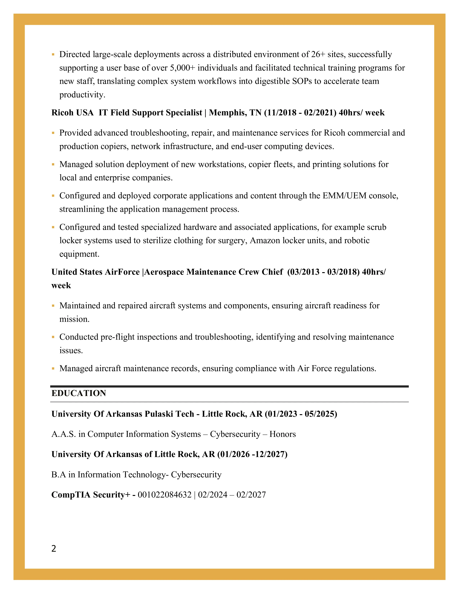

ALEX RANCIFER
System Service Representative @ IBM | Cybersecurity Specialist


Professional Summary
Highly technical System Administrator and CompTIA Security+ certified professional with over 7 years of experience managing critical enterprise infrastructure. Proven track record of maintaining high uptime for environments and directing large-scale deployments across 26+ sites for 5,000+ users. Expert in Windows Server, Active Directory, and multi-vendor hardware maintenance and repair ranging from IBM servers to Apple-certified repairs. Dedicated to delivering disciplined technical troubleshooting and systems optimization.
.png)
Professional Experience
System Service Representative
01/2025 - Present | Little Rock, AR
International Business Machines (IBM)
- Provide on-site and remote support for IBM hardware and software platforms and multi-vendor IT solutions including Lexmark, Lenovo, Dell, HP, Sun Micro, Pure Storage, NetApp, and Cisco.
- Maintain personnel records and update internal databases to support documentation for enterprise systems (servers, storage, and networking hardware).
- Provide emergency after-hours services for "hard down" emergencies to ensure rapid recovery.
- Repair all Apple products (MacBook, Mac, iPhone, iPad) as a certified Apple technician.
- Manage on-site IBM vendor installation projects as a Project Management Technician.
System Administrator
02/2021 - 01/2025 | Little Rock, AR
Ricoh USA
- Provisioned and maintained Windows Server environments, ensuring OS stability, security patching, and high availability for enterprise applications.
- Administered Active Directory (AD) to manage user accounts, group memberships, and permissions, implementing robust GPOs to enforce print security and system configurations.
- Deployed enterprise print management software, overseeing the full lifecycle from procurement and server installation to database configuration.
- Managed database operations, performing routine maintenance and optimization to support application reliability and data integrity.
- Maintained a Master List of Devices using advanced asset management tools, delivering high-level technical reporting and SLA compliance audits.
- Ensured 99.9% uptime for critical fleet infrastructure by proactively monitoring performance metrics and resolving bottlenecks.
- Served as a Tier 3 Escalation Point, resolving complex Windows OS and software integration issues.
- Directed large-scale deployments across 26+ sites and facilitated technical training programs, translating complex workflows into digestible SOPs.
IT Field Support Specialist
11/2018 - 02/2021 | Memphis, TN
Ricoh USA
- Provided advanced troubleshooting, repair, and maintenance services for Ricoh commercial and production copiers and network infrastructure.
- Managed solution deployment of new workstations, copier fleets, and printing solutions for enterprise companies.
- Configured and deployed corporate applications and content through the EMM/UEM console, streamlining management processes.
- Configured and tested specialized hardware including surgical scrub locker systems, Amazon locker units, and robotic equipment.
Education & Certifications
B.A. in Information Technology - Cybersecurity (Expected 12/2027)
University of Arkansas at Little Rock
University of Arkansas at Little Rock
A.A.S. in Computer Information Systems – Cybersecurity (Honors) (2025)
University of Arkansas Pulaski Tech - Little Rock, AR
University of Arkansas Pulaski Tech - Little Rock, AR
CompTIA Security+ Certified
ID: 001022084632 | Valid: 02/2024 – 02/2027
ID: 001022084632 | Valid: 02/2024 – 02/2027